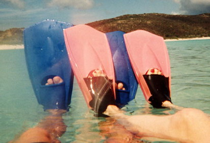
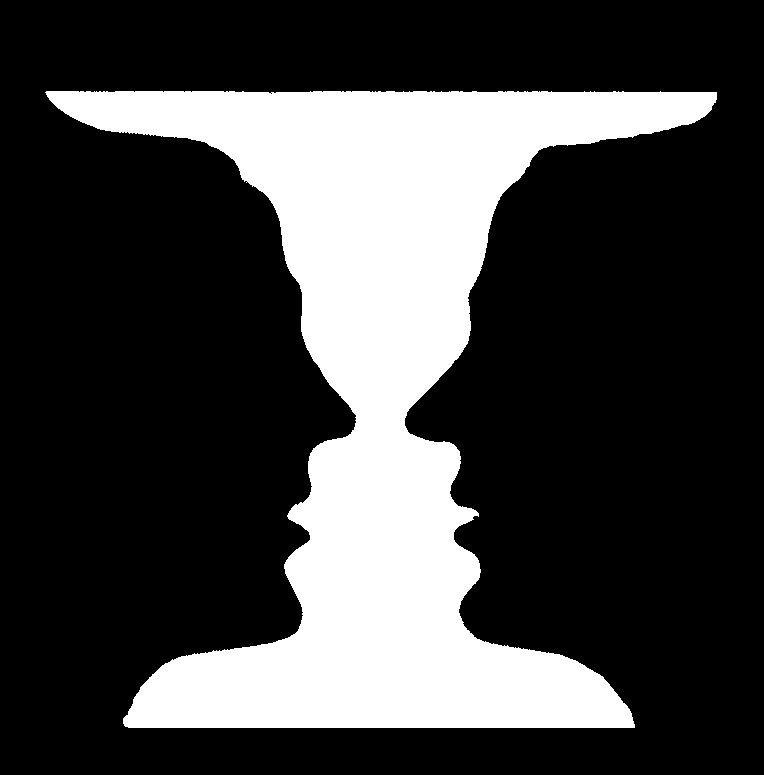
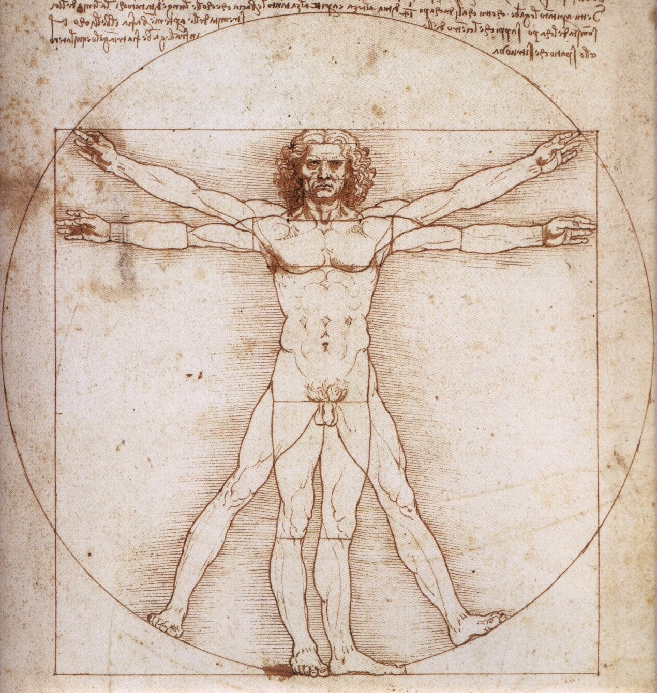
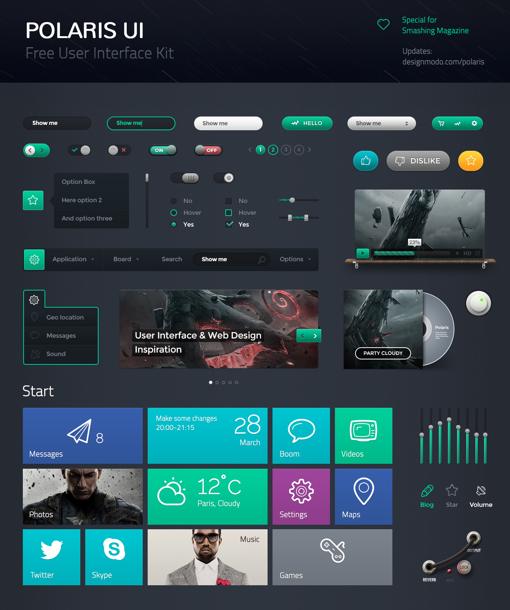
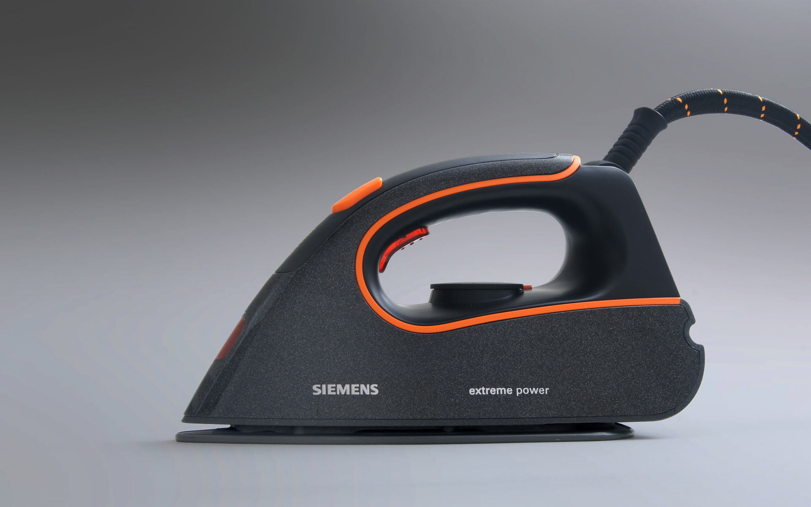
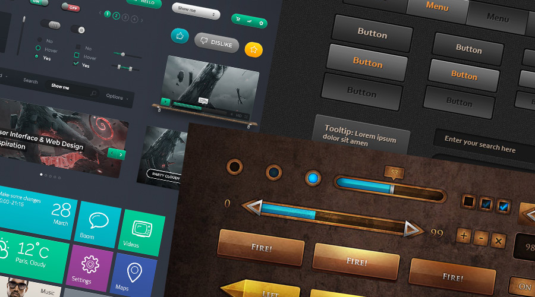
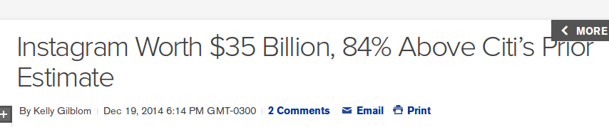
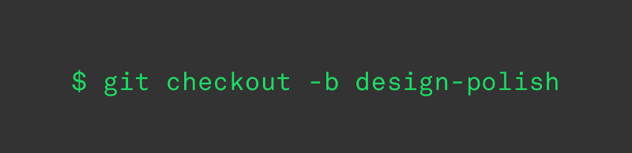

A quest for really open UX design
Pablo Cúbico - FOSDEM 2015
About me

What is Open Source UX?
What is UX anyway?
UX stands for USER EXPERIENCE
User Experience is...
the experience a user has while using a product.
- It can be measured
- It can be improved
- It can be developed and designed
GOOD User Experience
Symbiotic, Prosthetic, Uninterrupted , Continuous
Common misconceptions and myths
"UX is a process"
No, UX is an attribute of your product.
UX design is a process.
UX is not beauty
UX is UI
UX involves many other things
- Visual design
- Interaction design
- User testing
- Performance
- etc.
UX vs. UI: a few samples

Don't worry, I'll read aloud.
"Drop an asset library
and BAM!: UX"

The infamous
"Design is art" myth
"open source design is an oxymoron."
-Chris Messina
Design is form + function
Flawed design
Style varies
It's a visual design problem, not a UX one
Current status
"Free Software UX sucks"
"Commercial software does better"

Problems in FOSS UX
1. Lack of participation
2. No clear paths
for contribution
3. Devs don't know where to start
4. Disconnected lone rangers
5. Style differences
6. "Can I Haz" requests
7. Everyone is a designer
8. Customize all the things

9. No proper tools
10. No T-shaped devs/designers
11. Code health
12. No room for you
13. No visibility
14. Style dilution
15. Assumptions, assumptions everywhere.
16. Resisting change
17, 18, 19... many others...
Have you tried? Share your experience!
A roadmap for Contributing UX
Challenges and opportunities
0: Introduce yourself
Become a member
- Invite yourself to the party
- Identify some measurable problems
- Do some work to show your potential
- Be bold, there is always time to go back
- Be humble
1. Get to know the community!
Biggest perk from FOSS projects
- Always ask the community
- Get validation
- Be honest
- Invite others to join your quest
- Give recognition
- Don't take over
- Relax your ego
2. Consider starting with identity
- Analyze current status (colors, fonts, etc)
- Gather community opinions (survey)
- Begin with a proposal
- Explain why brand matters
- Beware of sensitive stuff (i.e.: LOGO)
3. Identify current UX problems
- Ask people, they know
- How about some user testing?
4. Get UX into the integration loop
- Make UX a phase of development
- Get developers in the loop
- Test everything
5. Prototype and discuss
- A/B testing (if possible)
- Test prototypes
- Give UI coders a finished prototype
6. Baby steps, small changes
- Don't go for the full redesign
- Propose small fixes
- Minimize coding effort
- Identify as many small problems as possible
- If possible, code something and show it
7. Find a team
- There is people working on UI
- Ask for participation
- Identify potential "UX people"
- Get coders, translators, users, testers
- Create conventions and standards for consistency
8. Set goals and deadlines
- Deadlines are the ultimate fast decision makers
- Use UX metrics to set goals
9. Show the larger picture
- Build a longer roadmap
- Get approval from the community
- Be realistic
- Review constantly
- If needed, reformulate
10. Avoid the "taste police"
Non-constructive criticism
- "It feels weird..."
- "I hate pink..."
- "I don't like the font"
- Ignore trolls and haters
- Justify with reason and sources
11. Adapt to the flow
- Version control
- Issue trackers
- Languages (ruby, python, etc)
- Frameworks
- Contribution platforms
- Mailing lists
- IRC Chatrooms
12. Use open formats
- Educate designers on open tools (Inkscape, GIMP, etc)
- Make assets freely available
What else?
-
It's up to you! Have any ideas? Share them.
A case study (kinda)
My first steps
- Got advice (from Sean Tilley): get validation
- Contributed a patch
- Then contributed a greater patch
First proposals
-
Diaspora foundation site
Current site First proposal Current site screenshot First proposal screenshot - Explained every choice
- Got some criticism = great feedback
- Got some validation from the community
Going back a step
- Realized there was an identity problem
- Get to work on identity first
- Find out some identity inconsistencies:
Helvetica vs. Roboto, etc
- Started an identity project on github, made with Inkscape
Next steps (2015)
- Get the UI team engaged
- Work for consistency
- Find proper tools for distributed work
- Build a broader roadmap
- Work on the Diaspora UI
Current UI My Stylish override My experimental UX pod - Want to join?
Main drawback: TIME
- Don't have money, have to work
- My speed for contributing sucks
- Don't have a detailed roadmap yet for crowdfunding
- Also, crowdfunding can't be just for me
An open UX ecosystem
everypixelhurts.tumblr.com
- Building free software UX tools
- Contact place for designers
- Discuss sustainability
Build free web-based UX tools
Coders wanted!
- Invision-like clickable prototyping
- User test recorders (screencast)
- Design voting app
Build a community
- A place for designers to offer collaboration
- A place for devs to seek for designers
- Share knowledge, write articles
- Teach about open formats
- Teach about open tools (Gimp, Inkscape, etc)
Funding
How? How to raise money for this?
Got any ideas? Please tell!.
A call for designers
Ask yourself: what do you love?
Money or design?
A call for coders
Help designers to get on board
"Build free software for freedom, not propietary malware for cops."
-Jacob Appelbaum
Conclusion
Thanks!
Questions? Experiences? Feedback?
Share it!
Sources:
https://news.layervault.com/stories/29560-ask-dn-have-you-contributed-to-open-source-as-a-designer
https://medium.com/words-about-design/designing-open-source-e3adc220cfa7
http://programmers.stackexchange.com/questions/87994/how-can-open-source-projects-be-successful-without-documentation-about-their-des
http://www.jefvanschendel.nl/blog/design_in_open_source_project_and_my_experiences.html
http://web.archive.org/web/20080805012124/http://mpt.net.nz/archive/2008/08/01/free-software-usability
http://web.archive.org/web/20081122141629/http://web.archive.org/web/20030201183139/http://mpt.phrasewise.com/discuss/msgReader$173
http://smarterware.org/7550/designers-women-and-hostility-in-open-source
http://www.markboulton.co.uk/journal/design-in-open-source
http://factoryjoe.com/blog/2008/01/03/the-problem-with-open-source-design/
https://wiki.diasporafoundation.org/Branding
Paper: "Designers wanted: participation and the user experience in open source software development" (Microsoft Research)